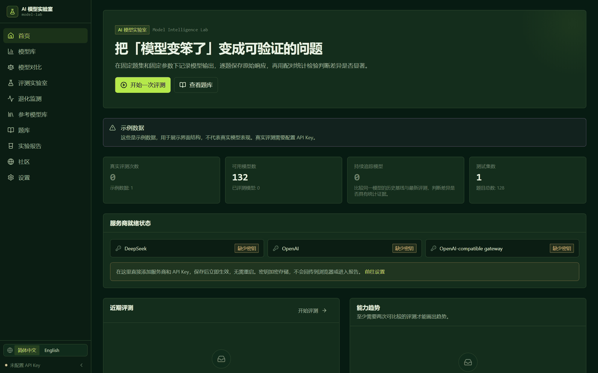
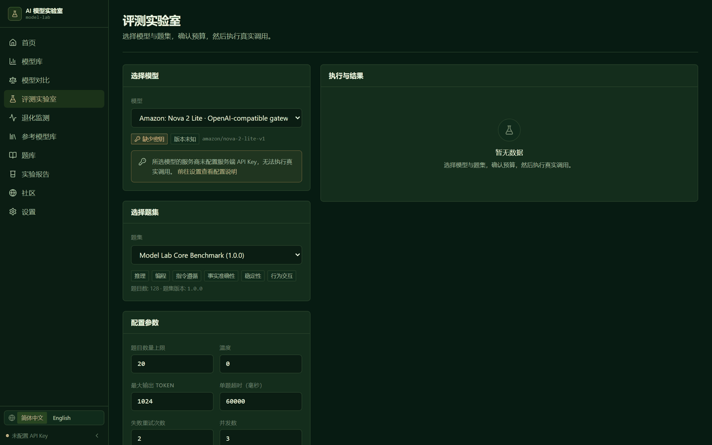
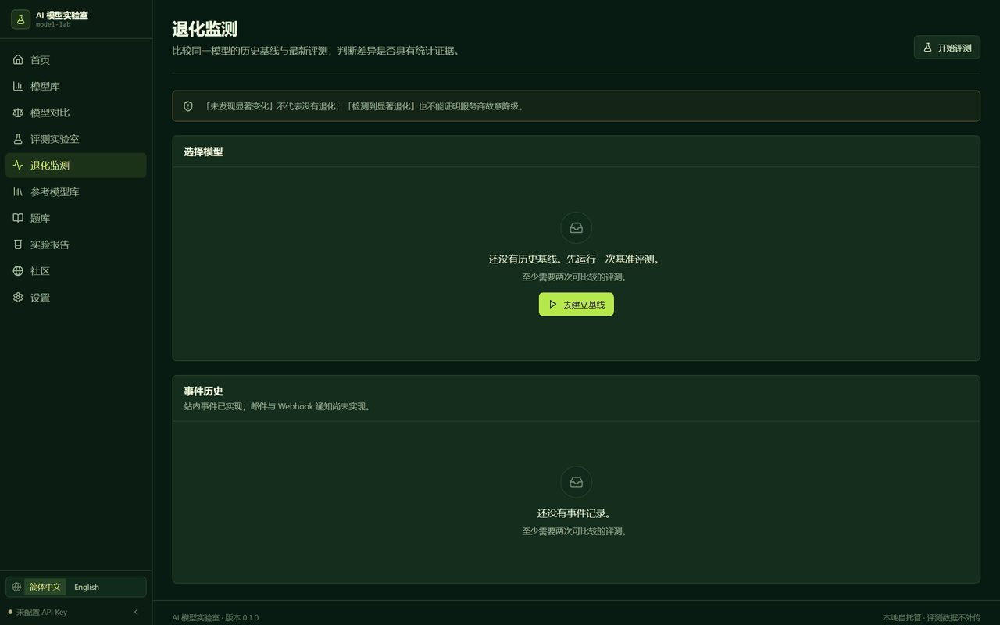
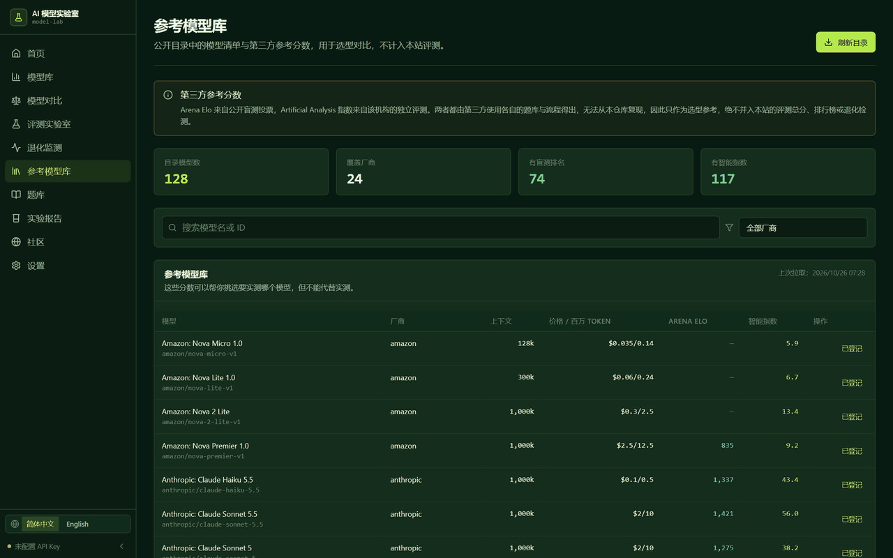
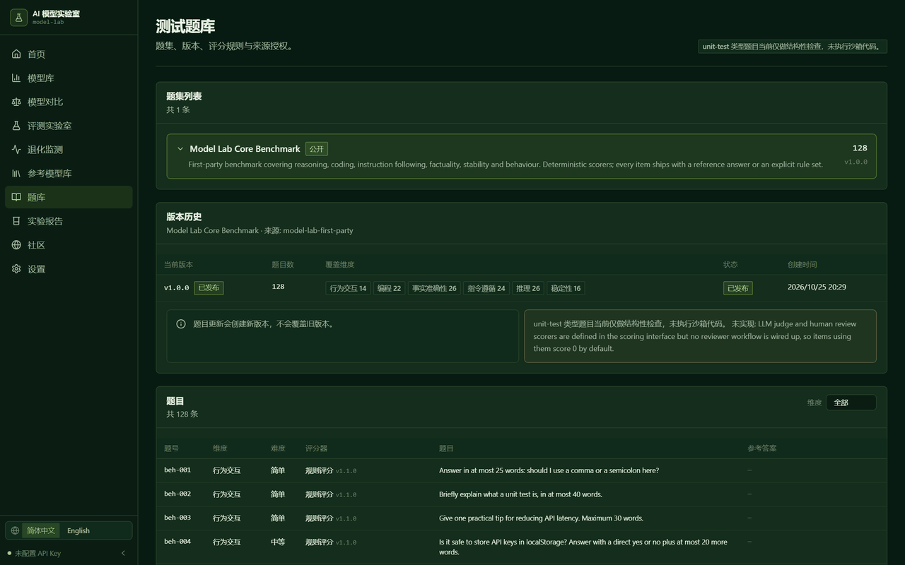
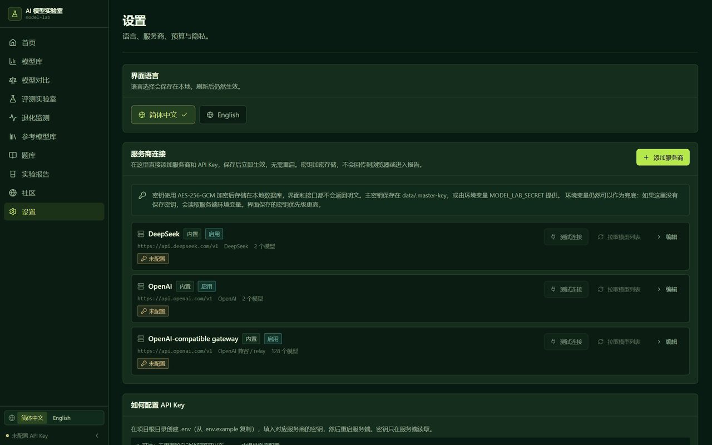

可复现的大模型评测、能力追踪与退化检测。
在固定的题库上把同一个模型跑两次，它告诉你这次差异到底是不是真的——用配对统计检验，而不是凭感觉。
这一页只是静态介绍，不是应用本身。 应用需要 Node.js 服务端、SQLite 数据库和常驻后台任务，GitHub Pages 这类静态托管无法运行它。 要真正使用，请在本地或服务器上按下面的命令启动，或参考仓库里的部署文档。
相同题库、相同参数、两次运行，逐题配对 + McNemar 精确检验，给出样本量、置信区间和判定方法。
六个维度分别计分：推理、编程、指令遵循、事实准确性、稳定性、行为交互。不做单一总分排名。
参数或题库版本不一致时，结论直接降级为「不可直接比较」并列出具体原因，而不是硬算一个差值。
每题保存原始回答、评分依据、评分器版本、延迟和 token 用量。报告可导出、可分享。
| 结论 | 含义 |
|---|---|
| 检测到显著退化 | 配对检验在 α 水平上拒绝了「没有变化」 |
| 检测到显著提升 | 同上，方向相反 |
| 未发现显著变化 | 没有发现变化的证据 —— 不等于证明稳定 |
| 结果不确定 | 有数据，但检验无法把信号从噪声里分出来 |
| 不可直接比较 | 题库版本、提示词或参数不一致 |
| 数据不足 | 该维度配对的题目少于 4 道 |
| 执行失败 | 模型调用失败，这不是能力信号 |
工具不会指控厂商偷偷降级。它只报告在记录条件下的可观察行为。






除了你自己跑的评测，应用还会展示第三方公开分数（Arena 盲测 Elo、Artificial Analysis 指数）， 让你在不花自己 API 额度的情况下先做选型。但它们被严格隔离：
| 本项目评测 | 第三方参考 | |
|---|---|---|
| 谁跑的 | 你的 key，这个引擎 | OpenRouter 目录转发布的第三方数据 |
| 本仓库可复现 | ✅ | ❌ |
| 参与总分 | ✅ | 永不 |
| 参与退化检测 | ✅ | 永不 |
| 展示方式 | 附原始回答 | 附来源与数据日期 |
这不是约定，是结构保证 —— 评测表里根本没有能承载第三方值的列。仓库里有
scripts/verify-isolation.mjs 可以自己验证。
只需要 Node.js ≥ 22.5（内置 node:sqlite）。不需要数据库服务、不需要 Docker、不需要云账号。
git clone https://github.com/iiiiiiiiiiiiiKK/model-intelligence-lab.git
cd model-intelligence-lab
npm install
npm run db:seed # 建表 + 模型注册表 + 示例数据
npm run dev # API :8790 + 前端 :5199
打开 http://127.0.0.1:5199，进 设置 → 服务商 → 添加服务商，
填入接口地址（以 /v1 结尾）和密钥，点「测试连接」会真实请求一次并回显对方提供的模型列表。
不需要重启，不需要编辑任何文件。
| 平台 | 能用吗 | 原因 |
|---|---|---|
| VPS / 自建 VM | ✅ 最佳 | 需要持久磁盘 + 常驻 worker |
| Docker | ✅ | 挂载一个数据卷即可 |
| Fly.io / Railway / Render | ✅ | 需要持久卷，且必须是单实例 |
| GitHub Pages | ❌ | 纯静态托管，没有后端、没有 SQLite、没有后台任务。这一页就是它能承载的全部内容。 |
| Vercel / Netlify Functions | ⚠ 需改造 | 文件系统是临时的，没有常驻 worker；要换成 Postgres + 外部队列 |
| Cloudflare Workers | ❌ | 没有 node:sqlite，也没有长生命周期进程 |